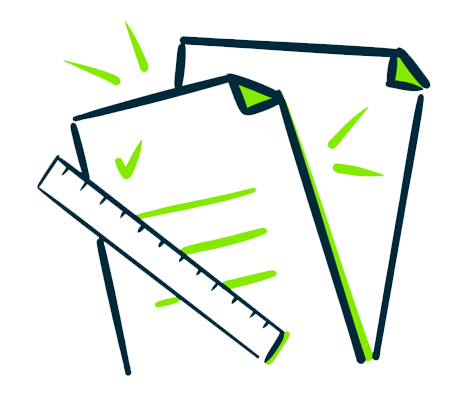

Accurate financial visibility is essential for sustainable business growth. Without structured reporting, businesses struggle to track receivables, monitor payables, and evaluate overall financial health.
Invoice Hub’s Reports & Dashboards module provides comprehensive, real-time insights that help businesses make informed decisions, manage cash flow effectively, and maintain operational control.
Centralized Financial Visibility
Invoice Hub consolidates financial data into structured dashboards, giving users immediate access to critical performance metrics. Instead of relying on manual spreadsheets or disconnected systems, businesses can monitor financial activity from one unified platform.

Key Insights at a Glance
- Outstanding Invoices : Track unpaid invoices in real time and monitor aging receivables to improve collection efforts.
- Pending and Overdue Bills : Stay ahead of vendor payments by identifying upcoming and overdue bills before penalties occur.
- Payment Summaries : View detailed summaries of payments received and payments made, ensuring accurate reconciliation.
- Tax Reports : Access structured tax reports that support compliance and simplify accounting processes.
- Cash Flow Overview : Gain a clear picture of incoming and outgoing funds to better manage liquidity and financial planning.

Data-Driven Financial Control
With dynamic dashboards and detailed reports, Invoice Hub enables businesses to:
- Identify revenue trends
- Monitor payment behavior
- Forecast cash flow
- Reduce financial risk
- Support strategic planning
Real-time reporting empowers finance teams and business leaders to act proactively instead of reactively.

Structured, Accessible Reporting
Reports can be accessed and reviewed directly within the system, ensuring consistent and reliable financial data across departments. This structured reporting environment improves transparency and accountability.
The Result
With Reports & Dashboards in Invoice Hub, businesses gain clarity, control, and confidence in their financial operations.
From receivables to payables, from tax tracking to cash flow forecasting — every financial insight is available in one intelligent, centralized view.